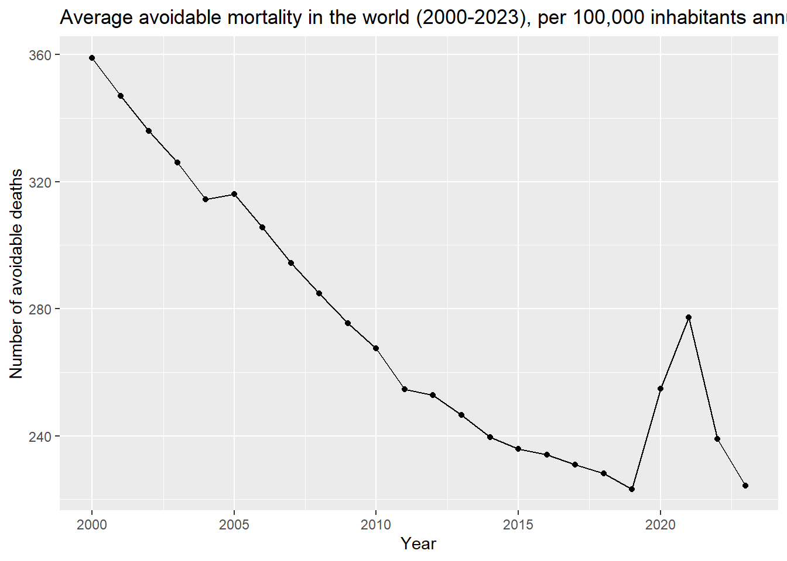
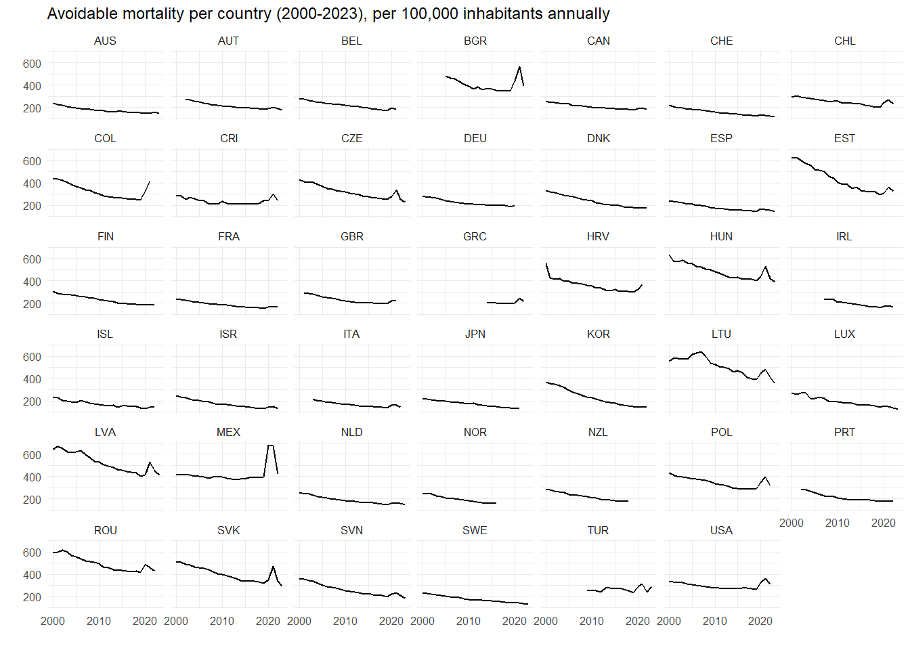

library(here)
here::i_am("Project-Data-Management.Rproj")DM Project
Link to our github project
Research question
How does the level of social protection impact the general population health ?
We want to identify if a stronger social and health protection (quantified by different variables such as health expenditure, tax revenues, etc) has an impact on the avoidable mortality rate. In order to do so we will analyse data collected in OECD countries from 2000 to 2023.
There are two goals in our analysis : The first is to understand the global evolution of the data and the reasons behind its trends. The second is to study the Covid-19 crisis. We believe it revealed how necessary having a proper social protection is to limit the number of deaths during a pandemic.
Method
To conduct our study we will be using a linear mixed model (LMM) with lags. Such a model will allow us to properly study the OECD countries taking into account their differences. It also a fitting model since we are working with time-based data.
Considering our research question, we will use multiple datasets and variables.
For explanatory variables, in order to estimate the strength and quality of a country’s health protection scheme, we will have : - Health expenditure - Social expenditure aggregates - Number of hospitals beds
We also have more general variables such as : - GDP per capita - Unemployment rate - Human development index - Life expectancy They will be used as control variables, since richer countries tend to have better living conditions which may lead to a generally healthier population, without the need for a strong health protection.
Finally, the explained variable will be : - Avoidable mortality It will be used to estimate the population’s general health.
Links to the sources and description
OECD
The Organisation for Economic Co-operation and Development (OECD) is an international organisation created in 1948. Its goal is to allow various countries to answer common problems and coordinate domestic and international policies. OECD members share data and receive analysis from experts on social, economic and environmental challenges.
Health expenditure (OECD)
Avoidable mortality (OECD)
Number of hospital beds (OECD)
World bank
The world bank group, is a family of five international organizations created in 1944 which help developing countries through leveraged loans. These loans are given for the purpose of pursuing economic development only. 189 countries are currently members of the World bank group.
GDP per capita in 2015 $US (World Bank)
Life expectancy (World Bank)
Life expectancy at birth indicates the number of years a newborn baby would have to live if the general rules of mortality at the time of birth were to remain the same throughout its life. Here it is measured by the world bank from 2000 to 2023.
IMF
The International Monetary Fund (IMF) is an international financial institution and a specialized agency of the United Nations created in 1944. It is composed of 191 member countries. Its goal is to help its members achieve sustainable growth and to encourage the expansion of trade. The IMF supports certain economic policies that promote financial stability and monetary cooperation.
Unemployment rate (IMF)
Instructions for the data : In the Data Explorer : - Time period : Custom : 01/01/2000 to 12/31/2024
UNDP
The United Nations Development Programme is a United Nations agency tasked, since 1965, with helping countries eliminate poverty and achieve sustainable economic growth and human development. They intervene by helping countries develop policies, leadership skills, partnerships and institutional capabilities.
Human development index (HDI) (UNDP)
Instructions for the data : - Filter by index : HDI - Filter by indicator : Human development index (value) - Filter by year : 2000 - 2023 - Filter by group/region/country/territory : Select all countries
Loading the packages
library(ggplot2)
library(dplyr)
library(tidyr)
library(vroom)
library(readxl)Warning: le package 'readxl' a été compilé avec la version R 4.5.2Loading the datasets and summary
Health expenditure
health_expenditure <- vroom(here("data", "OECD.ELS.HD,DSD_SHA@DF_SHA,1.0+.A.EXP_HEALTH.PT_B1GQ._T.._T.._T....csv"))Warning: One or more parsing issues, call `problems()` on your data frame for details,
e.g.:
dat <- vroom(...)
problems(dat)problems(health_expenditure)# A tibble: 2 × 5
row col expected actual file
<int> <int> <chr> <chr> <chr>
1 1116 39 1/0/T/F/TRUE/FALSE P C:/Users/karla/Documents/Uni…
2 1116 40 1/0/T/F/TRUE/FALSE Provisional value C:/Users/karla/Documents/Uni…There are issues with columns 39/40. Opening the file in Excel tells us that these columns are mostly empty and “P” appears on row 1116. This is just a comment on the data that is not useful to us in the project and it doesn’t impact the variables of interest. Columns 39 and 40 will just delete these columns during the data cleaning process. Therefore, we load the data without resolving this issue.
We compute summary statistics including the percentage of missing values. Although several datasets show a relatively high percentage of missing values, this does not significantly affect our final merged dataset as our analysis relies mostly on 2 columns (time period and observed value) of each dataset.
health_expenditure |>
summarise("Number of rows" = n(),
"Number of columns" = ncol(health_expenditure),
"Percentage of NA" = paste0(round(sum(is.na(health_expenditure)) / (n() * ncol(health_expenditure)) * 100, 2), "%")) |>
as.data.frame() |>
knitr::kable()| Number of rows | Number of columns | Percentage of NA |
|---|---|---|
| 1246 | 46 | 25.62% |
Avoidable mortality
avoidable_mortality <- vroom(here("data", "OECD.ELS.HD,DSD_HEALTH_STAT@DF_AM,1.1+.A.AVM.DT_10P5HB.._T........csv"))
avoidable_mortality |>
summarise("Number of rows" = n(),
"Number of columns" = ncol(avoidable_mortality),
"Percentage of NA" = paste0(round(sum(is.na(avoidable_mortality)) / (n() * ncol(avoidable_mortality)) * 100, 2), "%")) |>
as.data.frame() |>
knitr::kable()| Number of rows | Number of columns | Percentage of NA |
|---|---|---|
| 997 | 44 | 18.18% |
GDP per capita
When opening the file in Excel, we see that the first 4 rows are empty. We need to skip the first 4 rows and use row 5 as column headers.
gdp_per_capita <- vroom(
here("data/API_NY.GDP.PCAP.KD_DS2_en_csv_v2_242568", "API_NY.GDP.PCAP.KD_DS2_en_csv_v2_242568.csv"),
delim = ",",
skip = 4, # need to skip the first 4 rows
col_names = TRUE,
)
gdp_per_capita |>
summarise("Number of rows" = n(),
"Number of columns" = ncol(gdp_per_capita),
"Percentage of NA" = paste0(round(sum(is.na(gdp_per_capita)) / (n() * ncol(gdp_per_capita)) * 100, 2), "%")) |>
as.data.frame() |>
knitr::kable()| Number of rows | Number of columns | Percentage of NA |
|---|---|---|
| 266 | 70 | 17.84% |
Hospital beds
hospital_beds <- vroom(here("data", "OECD.ELS.HD,DSD_HEALTH_REAC_HOSP@DF_BEDS_FUNC,1.0+..BD..._T._T...csv"))
hospital_beds |>
summarise("Number of rows" = n(),
"Number of columns" = ncol(hospital_beds),
"Percentage of NA" = paste0(round(sum(is.na(hospital_beds)) / (n() * ncol(hospital_beds)) * 100, 2), "%")) |>
as.data.frame() |>
knitr::kable()| Number of rows | Number of columns | Percentage of NA |
|---|---|---|
| 1034 | 38 | 36.41% |
Life expectancy
The header is on row 5. We must delete the comments on the previous lines to properly load the dataset.
life_expectancy <- vroom(
here("data/API_SP.DYN.LE00.IN_DS2_fr_csv_v2_11258", "API_SP.DYN.LE00.IN_DS2_fr_csv_v2_11258.csv"),
delim = ",",
skip = 4, # need to skip the first 4 rows
col_names = TRUE)
life_expectancy |>
summarise("Number of rows" = n(),
"Number of columns" = ncol(life_expectancy),
"Percentage of NA" = paste0(round(sum(is.na(life_expectancy)) / (n() * ncol(life_expectancy)) * 100, 2), "%")) |>
as.data.frame() |>
knitr::kable()| Number of rows | Number of columns | Percentage of NA |
|---|---|---|
| 266 | 70 | 3.39% |
Unemployment
unemployment <- vroom(here("data",
"dataset_2025-11-21T14_31_58.442440069Z_DEFAULT_INTEGRATION_IMF.RES_WEO_9.0.0.csv"))
unemployment |>
summarise("Number of rows" = n(),
"Number of columns" = ncol(unemployment),
"Percentage of NA" = paste0(round(sum(is.na(unemployment)) / (n() * ncol(unemployment)) * 100, 2), "%")) |>
as.data.frame() |>
knitr::kable()| Number of rows | Number of columns | Percentage of NA |
|---|---|---|
| 122 | 32 | 4.05% |
HDI
hdi <- read_excel("data/hdr-data.xlsx")
hdi |>
summarise("Number of rows" = n(),
"Number of columns" = ncol(hdi),
"Percentage of NA" = paste0(round(sum(is.na(hdi)) / (n() * ncol(hdi)) * 100, 2), "%")) |>
as.data.frame() |>
knitr::kable()| Number of rows | Number of columns | Percentage of NA |
|---|---|---|
| 4484 | 10 | 20% |
Some data cleaning before merging
We first need to keep only the interesting variables (observations, time period and country code) in all our datasets. We will later merge all data sets using the country code (almost the same in all datasets, minor exception in the unemployment dataset). We will also convert the GDP per capita, life expectancy and unemployment data sets to long formats, so that all datasets are in the same format before merging. We also check the class of all variables before merging.
Health expenditure
# selecting only interesting variables
health_expenditure <- health_expenditure |>
select(REF_AREA, TIME_PERIOD, OBS_VALUE)
# checking the class of these variables
sapply(health_expenditure, class) REF_AREA TIME_PERIOD OBS_VALUE
"character" "numeric" "numeric" Avoidable mortality
avoidable_mortality <- avoidable_mortality |>
select(REF_AREA, TIME_PERIOD, OBS_VALUE)
sapply(avoidable_mortality, class) REF_AREA TIME_PERIOD OBS_VALUE
"character" "numeric" "numeric" Hospital beds
hospital_beds <- hospital_beds |>
select(REF_AREA, TIME_PERIOD, OBS_VALUE)
sapply(hospital_beds, class) REF_AREA TIME_PERIOD OBS_VALUE
"character" "numeric" "numeric" Life expectancy
# we select only the period we are working on : 2000 to 2023
life_expectancy <- life_expectancy |>
select(`Country Code`, as.character(2000:2023)) |>
rename(REF_AREA = `Country Code`) # renaming to harmonise with the other datasets
# pivot this data set to a long format
life_expectancy_long <- pivot_longer(life_expectancy, cols=as.character(2000:2023), names_to="TIME_PERIOD",
values_to="OBS_VALUE")
# checking the class of variables
sapply(life_expectancy_long, class) REF_AREA TIME_PERIOD OBS_VALUE
"character" "character" "numeric" # Changing the TIME_PERIOD variable to numeric
life_expectancy_long$TIME_PERIOD = as.numeric(life_expectancy_long$TIME_PERIOD)
sapply(life_expectancy_long, class) REF_AREA TIME_PERIOD OBS_VALUE
"character" "numeric" "numeric" GDP per capita
gdp_per_capita <- gdp_per_capita |>
select(`Country Code`, as.character(2000:2023)) |>
rename(REF_AREA = `Country Code`) # harmonizing the key variable for merging
# pivot to a long format
gdp_per_capita_long <- pivot_longer(gdp_per_capita, cols=as.character(2000:2023), names_to="TIME_PERIOD",
values_to="OBS_VALUE")
sapply(gdp_per_capita_long, class) REF_AREA TIME_PERIOD OBS_VALUE
"character" "character" "numeric" # Changing the TIME_PERIOD variable to numeric
gdp_per_capita_long$TIME_PERIOD = as.numeric(gdp_per_capita_long$TIME_PERIOD)
sapply(gdp_per_capita_long, class) REF_AREA TIME_PERIOD OBS_VALUE
"character" "numeric" "numeric" Unemployment
unemployment <- unemployment |>
select(SERIES_CODE, as.character(2000:2023)) |>
rename(REF_AREA = SERIES_CODE) # harmonizing the country code
# country code is in the format "ZAF.LUR.A". We only keep "ZAF", and drop the rest for all rows.
unemployment$REF_AREA <- sub("\\..*$", "", unemployment$REF_AREA)
# pivot to a long format
unemployment_long <- pivot_longer(unemployment, cols=as.character(2000:2023), names_to="TIME_PERIOD",
values_to="OBS_VALUE")
sapply(unemployment_long, class) REF_AREA TIME_PERIOD OBS_VALUE
"character" "character" "numeric" # Changing the TIME_PERIOD variable to numeric
unemployment_long$TIME_PERIOD = as.numeric(unemployment_long$TIME_PERIOD)
sapply(unemployment_long, class) REF_AREA TIME_PERIOD OBS_VALUE
"character" "numeric" "numeric" HDI
hdi <- hdi |>
select(countryIsoCode, year, value) |>
rename(REF_AREA = countryIsoCode, TIME_PERIOD = year, OBS_VALUE = value)
# Checking variable class
sapply(hdi, class) REF_AREA TIME_PERIOD OBS_VALUE
"character" "character" "character" # TIME_PERIOD and OBS_VALUE need to be converted to a numeric format
hdi$TIME_PERIOD = as.numeric(hdi$TIME_PERIOD)
hdi$OBS_VALUE = as.numeric(hdi$OBS_VALUE)
sapply(hdi, class) REF_AREA TIME_PERIOD OBS_VALUE
"character" "numeric" "numeric" Merging the data sets
In order to have one unique database to work on, we need to merge all the datasets. To do so, we will use the variables REF_AREA and TIME_PERIOD together as our key. Our aim is to analyse the impact of the selected variables on avoidable_mortality, our dependent variable. Therefore, we use left_join to merge all data, relative to the data available in the avoidable_mortality dataset.
database <- avoidable_mortality |>
left_join(gdp_per_capita_long, by = c("REF_AREA", "TIME_PERIOD"), suffix = c("", "_gdp")) |>
left_join(hdi, by = c("REF_AREA", "TIME_PERIOD"), suffix = c("", "_hdi")) |>
left_join(health_expenditure, by = c("REF_AREA", "TIME_PERIOD"), suffix = c("", "_health_exp")) |>
left_join(hospital_beds, by = c("REF_AREA", "TIME_PERIOD"), suffix = c("", "_hosp_beds")) |>
left_join(life_expectancy_long, by = c("REF_AREA", "TIME_PERIOD"), suffix = c("", "_life_exp")) |>
left_join(social_expenditure, by = c("REF_AREA", "TIME_PERIOD"), suffix = c("", "_social_expenditure")) |>
left_join(unemployment_long, by = c("REF_AREA", "TIME_PERIOD"), suffix = c("", "_unemp"))
# Giving a better name to the avoidable mortality column
database <- database |>
rename(OBS_VALUE_mortality = OBS_VALUE)
# short overview of our merged database
head(database, n=5)# A tibble: 5 × 10
REF_AREA TIME_PERIOD OBS_VALUE_mortality OBS_VALUE_gdp OBS_VALUE_hdi
<chr> <dbl> <dbl> <dbl> <dbl>
1 AUS 2000 237 45860. 0.897
2 AUS 2001 227 46191. 0.9
3 AUS 2002 218 47486. 0.902
4 AUS 2003 207 48394. 0.906
5 AUS 2004 199 49902. 0.91
# ℹ 5 more variables: OBS_VALUE_health_exp <dbl>, OBS_VALUE_hosp_beds <dbl>,
# OBS_VALUE_life_exp <dbl>, OBS_VALUE_social_expenditure <dbl>,
# OBS_VALUE_unemp <dbl>Summary statistics of the merged dataset
database |>
summarise("Number of rows" = n(),
"Number of columns" = ncol(database),
"Percentage of NA" = paste0(round(sum(is.na(database)) / (n() * ncol(database)) * 100, 2), "%"),
"Number of countries studied" = n_distinct(REF_AREA),
"Time period" = paste0(min(TIME_PERIOD), "-", max(TIME_PERIOD))) |>
as.data.frame() |>
knitr::kable()| Number of rows | Number of columns | Percentage of NA | Number of countries studied | Time period |
|---|---|---|---|---|
| 997 | 10 | 2.72% | 46 | 2000-2023 |
We should note that, as a consequence of the left_join and the gaps in the avoidable_mortality dataset, there is missing data for several years for some countries : Turkey (2000 to 2008) and Greece (2000 to 2013). Although this represents a limitation of the dataset used, we decide to keep both countries, as we cannot afford to lose more data. We therefore keep all 46 countries, over the period 2000-2023.
Summarising the number of NA per variable
colSums(is.na(database)) |>
knitr::kable(caption = "Number of NA per column")| x | |
|---|---|
| REF_AREA | 0 |
| TIME_PERIOD | 0 |
| OBS_VALUE_mortality | 0 |
| OBS_VALUE_gdp | 0 |
| OBS_VALUE_hdi | 0 |
| OBS_VALUE_health_exp | 12 |
| OBS_VALUE_hosp_beds | 126 |
| OBS_VALUE_life_exp | 0 |
| OBS_VALUE_social_expenditure | 133 |
| OBS_VALUE_unemp | 0 |
Identifying missing values per country and per variable
database |>
group_by(REF_AREA) |>
summarise(across(everything(), ~ sum(is.na(.)), .names = "{col}")) |> # number of NA
filter(rowSums(across(!REF_AREA)) > 0) |> # keep countries with at least 1 NA
select(REF_AREA, where(~ any(. > 0))) |> # keep variables with at least 1 country with 1 NA
knitr::kable(caption = "Missing values by country and variable")| REF_AREA | OBS_VALUE_health_exp | OBS_VALUE_hosp_beds | OBS_VALUE_social_expenditure |
|---|---|---|---|
| ARG | 0 | 18 | 23 |
| AUS | 0 | 8 | 1 |
| BGR | 0 | 0 | 1 |
| BRA | 0 | 1 | 22 |
| COL | 0 | 10 | 10 |
| CRI | 4 | 0 | 11 |
| DNK | 0 | 3 | 0 |
| HRV | 3 | 0 | 8 |
| IRL | 0 | 2 | 0 |
| ISL | 0 | 7 | 0 |
| LUX | 0 | 4 | 0 |
| NOR | 0 | 2 | 0 |
| NZL | 0 | 9 | 0 |
| PER | 2 | 23 | 12 |
| POL | 0 | 3 | 0 |
| ROU | 3 | 0 | 4 |
| THA | 0 | 20 | 20 |
| ZAF | 0 | 16 | 21 |
# removing countries with too many NA
database <- database |>
filter(!REF_AREA %in% c("ZAF", "ARG", "PER", "THA", "BRA"))
dim(database)[1] 888 10There are 133 missing values in OBS_VALUE_social_expenditure. However, we cannot deduce that there are no social contributions in these countries, only that they have not been reported. As the missing values span over several years at a time, and often at the beginning of the time period, replacing them with a 0 or imputing them would result in a risk distorting our results by forcing an artificial trend. We therefore retain the missing values. However, we decide to remove 5 countries of our analysis : South Africa (ZAF), Argentina (ARG), Peru (PER), Thailand (THA) and Brazil (BRA) as there are too many values missing to analyse them further during the modelling phase.
There are 12 missing values in OBS_VALUE_health_exp. They also correspond to missing values at the beginning of the time period. For instance, the health expenditure data is missing for Romania (ROU) from 2000 to 2002. Given both the small number of missing values, we also choose not to impute this variable.
Finally, 126 values are missing in OBS_VALUE_hosp_beds also in the beginning of the time periods available (e.g. 2007-2008 for Ireland). As with the previous variables, imputing these values would require imposing information that we do not have, and thus we retain them as missing.
Limitations of the merged database
The datasets used in this project present several limitations that must be considered when interpreting the results.
First, some variables contain an important proportion of missing values (e.g. social expenditure and hospital beds). The NA are primarily concentrated at the beginning of the time period studied (2000-2023) and likely reflect data reporting issues rather than an absence of social policies such as health contributions, usually marked as 0 in the rest of the dataset. This will naturally impact our results, especially since the missing data often comes from developing countries, thus biasing the results towards the trends observed in developed countries.
Second, the temporal coverage varies between countries. Indeed, there is no data for Turkey before 2009 or for Greece before 2014. This unevenness reduces the length of the time series for some countries and will influence the statistical analysis later on.
Presentation of the main variables
REF_AREA: first 3 letters of the country whose data is shown.TIME_PERIOD: year for which the data was collected.OBS_VALUE_mortality: avoidable mortality, the number of “avoidable deaths” per 100000 inhabitants annually. It contains contains both “preventable mortality” and “treatable (or amenable) mortality”. The first refers to deaths that can be avoided through effective public health and primary prevention interventions. The second refers to timely and effective health care interventions, including prevention and treatment.OBS_VALUE_hdi: human development index, per country, annually. It is between 0 and 1, 1 meaning the country in question is well developed.OBS_VALUE_gdp: GDP per capita, per country, annually. It is measured in constant US dollars from 2015.OBS_VALUE_hosp_beds: number of hospital beds available per country, annually.OBS_VALUE_life_exp: life expectancy of a country’s inhabitants, in years. It indicates the number of years a newborn baby would have to live if the general rules of mortality at the time of birth were to remain the same throughout its lifeOBS_VALUE_social_expenditure: social expenditure aggregate including : Old age, Survivors, Incapacity-related benefits, Health, Family, Active labor market programmes, Unemployment, Housing, and Other social policy areas. It is measured in percentage per GDP for all countries.OBS_VALUE_unemp: unemployment rate per country, annually.OBS_VALUE_health_exp: health expenditure observed annually. It is measured in percentage of the country’s GDP. It was computed using financial flows related to the consumption of healthcare goods and services.
Graphical representation of our main variable : avoidable mortality (OBS_VALUE_mortality)
Global avoidable mortality
First we can take a look at the number of avoidable deaths globally
database |>
group_by(TIME_PERIOD) |>
summarise(mean_mortality = mean(OBS_VALUE_mortality, na.rm = TRUE)) |>
ggplot(aes(x = TIME_PERIOD, y = mean_mortality)) +
geom_line() +
geom_point() +
labs(
title = "Average avoidable mortality in the world (2000-2023), per 100,000 inhabitants annually",
y = "Number of avoidable deaths",
x = "Year")
This graph reveals a downward trend in avoidable mortality from 2000 to 2019 cut by a sudden increase in 2020 and 2021 during Covid-19. However it seems that, afterward, the variable goes back to its previous trend.
Avoidable mortality per country
We also check the avoidable_mortality variable per country.
database |>
ggplot(aes(x = TIME_PERIOD, y = OBS_VALUE_mortality)) +
geom_line() +
facet_wrap(~ REF_AREA) + # we do not use free_y so that we can compare rates between countries
theme_minimal(base_size = 7.5) +
scale_x_continuous(breaks = c(2000, 2010, 2020)) +
labs(
x = "",
y = "",
title = "Avoidable mortality per country (2000-2023), per 100,000 inhabitants annually")
Most countries share the same downward sloping trend in avoidable mortality. We can only observe a long term increase in the avoidable mortality rate in Thailand (THA) and South Africa (ZAF) before 2010. In addition, we can see the impact of the Covid-19 crisis clearly in some countries : Mexico (MEX), Peru (PER). Moreover, the high mortality rate in South Africa (1,000 deaths per 100,000 inhabitants around 2005) makes it more difficult to observe the trend and shocks in avoidable mortality in other countries, particularly the most developed ones.
Test lag operator
data_lagged <- database |>
group_by(REF_AREA) |>
arrange(TIME_PERIOD) |>
mutate(
mortality_lag1 = lag(OBS_VALUE_mortality, 1),
mortality_lag2 = lag(OBS_VALUE_mortality, 2),
healthExp_lag1 = lag(OBS_VALUE_health_exp, 1),
healthExp_lag2 = lag(OBS_VALUE_health_exp, 2),
hospBeds_lag1 = lag(OBS_VALUE_hosp_beds, 1),
hospBeds_lag2 = lag(OBS_VALUE_hosp_beds, 2),
socialExp_lag1 = lag(OBS_VALUE_social_expenditure, 1),
socialExp_lag2 = lag(OBS_VALUE_social_expenditure, 2)
) |>
ungroup()Test models
The model I want to try is :
Mortality_{y,t} = health expenditure (normal + lag) + social expenditure (normal + lag) + number of hospital beds (normal + lag) + GDP per capita (random effect) + Unemployment rate (random effect) + HDI (random effect) + Life expectancy (random effect)
library(lme4)Warning: le package 'lme4' a été compilé avec la version R 4.5.2Le chargement a nécessité le package : Matrix
Attachement du package : 'Matrix'Les objets suivants sont masqués depuis 'package:tidyr':
expand, pack, unpackfirst_test <- lmer(OBS_VALUE_mortality ~ mortality_lag1 + mortality_lag2 + healthExp_lag1 + healthExp_lag2 + hospBeds_lag1 + hospBeds_lag2 + OBS_VALUE_gdp + OBS_VALUE_unemp + OBS_VALUE_hdi + OBS_VALUE_life_exp + (OBS_VALUE_gdp + OBS_VALUE_unemp + OBS_VALUE_hdi + OBS_VALUE_life_exp | REF_AREA),
data = data_lagged, REML = FALSE)Warning: Some predictor variables are on very different scales: consider rescaling.
You may also use (g)lmerControl(autoscale = TRUE) to improve numerical stability.summary(first_test)Linear mixed model fit by maximum likelihood ['lmerMod']
Formula:
OBS_VALUE_mortality ~ mortality_lag1 + mortality_lag2 + healthExp_lag1 +
healthExp_lag2 + hospBeds_lag1 + hospBeds_lag2 + OBS_VALUE_gdp +
OBS_VALUE_unemp + OBS_VALUE_hdi + OBS_VALUE_life_exp + (OBS_VALUE_gdp +
OBS_VALUE_unemp + OBS_VALUE_hdi + OBS_VALUE_life_exp | REF_AREA)
Data: data_lagged
AIC BIC logLik -2*log(L) df.resid
6325.4 6450.0 -3135.7 6271.4 719
Scaled residuals:
Min 1Q Median 3Q Max
-3.0513 -0.4927 -0.0132 0.4906 11.8910
Random effects:
Groups Name Variance Std.Dev. Corr
REF_AREA (Intercept) 6.717e+01 8.19588
OBS_VALUE_gdp 2.905e-05 0.00539 -0.91
OBS_VALUE_unemp 1.553e+01 3.94075 0.44 -0.39
OBS_VALUE_hdi 1.716e+02 13.09843 0.22 -0.22 0.00
OBS_VALUE_life_exp 9.394e+00 3.06496 0.65 -0.67 0.38 0.84
Residual 1.305e+02 11.42211
Number of obs: 746, groups: REF_AREA, 41
Fixed effects:
Estimate Std. Error t value
(Intercept) 2.756e+03 6.927e+01 39.780
mortality_lag1 1.869e-01 2.690e-02 6.948
mortality_lag2 -1.435e-01 2.682e-02 -5.350
healthExp_lag1 -3.954e-01 1.325e+00 -0.298
healthExp_lag2 5.182e-01 1.344e+00 0.386
hospBeds_lag1 -2.254e-04 1.268e-04 -1.778
hospBeds_lag2 1.745e-04 1.268e-04 1.376
OBS_VALUE_gdp -1.408e-03 1.026e-03 -1.373
OBS_VALUE_unemp 8.796e-01 7.638e-01 1.152
OBS_VALUE_hdi 7.143e+02 7.373e+01 9.689
OBS_VALUE_life_exp -3.942e+01 1.132e+00 -34.825
Correlation of Fixed Effects:
(Intr) mrtl_1 mrtl_2 hltE_1 hltE_2 hspB_1 hspB_2 OBS_VALUE_g
mortlty_lg1 -0.429
mortlty_lg2 -0.180 -0.665
hlthExp_lg1 -0.098 -0.212 0.283
hlthExp_lg2 0.231 0.103 -0.229 -0.717
hospBds_lg1 0.027 -0.035 0.022 0.036 0.028
hospBds_lg2 -0.053 0.027 -0.029 0.001 -0.006 -0.967
OBS_VALUE_g 0.111 -0.026 0.074 -0.052 -0.047 -0.007 -0.018
OBS_VALUE_n 0.049 0.008 0.026 -0.115 0.010 0.008 -0.036 -0.074
OBS_VALUE_h -0.202 -0.109 0.168 -0.104 -0.055 -0.047 0.048 -0.269
OBS_VALUE__ -0.616 0.405 -0.036 0.126 -0.146 0.003 0.004 -0.223
OBS_VALUE_n OBS_VALUE_h
mortlty_lg1
mortlty_lg2
hlthExp_lg1
hlthExp_lg2
hospBds_lg1
hospBds_lg2
OBS_VALUE_g
OBS_VALUE_n
OBS_VALUE_h -0.040
OBS_VALUE__ 0.064 -0.483
fit warnings:
Some predictor variables are on very different scales: consider rescaling.
You may also use (g)lmerControl(autoscale = TRUE) to improve numerical stability.We can see two things :
- Firstly, the second lag’s value for each of the explanatory variables are not impacting the explained variable as we could have thought. They always evolve in the “opposite direction” (positive when the first lag is negative and negative when the first lag is positive).
What we can assume is that there is not really a direct effect of the second lag on the explained variable and that they only affect the explained variable through their relation with the first lag. Therefore we can probably remove them from our regressions.
- Secondly, when assuming this many variables have random effects (here, gdp, hdi, unemployment and life expectancy), we notice there is a lot of correlation between the variables with random effects. Especially, there is a lot of correlation between each of these variables and the intercept. Therefore it is probably not relevant to have these variables as random effects.
After this first test, what I am going to try is to largely reduce the number of random effects, and only use one lag, as the second one is negative meaning it does not seem to directly affect mortality but rather have a strong link with the first lag :
second_test <- lmer(OBS_VALUE_mortality ~ mortality_lag1 + healthExp_lag1 + hospBeds_lag1 + OBS_VALUE_gdp + OBS_VALUE_unemp + OBS_VALUE_hdi + OBS_VALUE_life_exp + (1 | REF_AREA), data = data_lagged, REML = FALSE)Warning: Some predictor variables are on very different scales: consider rescaling.
You may also use (g)lmerControl(autoscale = TRUE) to improve numerical stability.summary(second_test)Linear mixed model fit by maximum likelihood ['lmerMod']
Formula:
OBS_VALUE_mortality ~ mortality_lag1 + healthExp_lag1 + hospBeds_lag1 +
OBS_VALUE_gdp + OBS_VALUE_unemp + OBS_VALUE_hdi + OBS_VALUE_life_exp +
(1 | REF_AREA)
Data: data_lagged
AIC BIC logLik -2*log(L) df.resid
6657.8 6704.5 -3318.9 6637.8 780
Scaled residuals:
Min 1Q Median 3Q Max
-4.1635 -0.4504 -0.0189 0.4252 11.4544
Random effects:
Groups Name Variance Std.Dev.
REF_AREA (Intercept) 453.0 21.28
Residual 215.4 14.68
Number of obs: 790, groups: REF_AREA, 41
Fixed effects:
Estimate Std. Error t value
(Intercept) 2.266e+03 7.018e+01 32.291
mortality_lag1 2.449e-01 2.189e-02 11.188
healthExp_lag1 9.080e-01 7.087e-01 1.281
hospBeds_lag1 6.237e-06 9.063e-06 0.688
OBS_VALUE_gdp 1.689e-04 1.422e-04 1.188
OBS_VALUE_unemp 1.351e+00 2.335e-01 5.788
OBS_VALUE_hdi 4.119e+02 5.048e+01 8.159
OBS_VALUE_life_exp -3.108e+01 1.013e+00 -30.691
Correlation of Fixed Effects:
(Intr) mrtl_1 hltE_1 hspB_1 OBS_VALUE_g OBS_VALUE_n OBS_VALUE_h
mortlty_lg1 -0.858
hlthExp_lg1 0.174 -0.004
hospBds_lg1 0.013 -0.003 -0.043
OBS_VALUE_g 0.166 0.000 0.011 -0.010
OBS_VALUE_n 0.043 -0.107 -0.179 0.002 0.258
OBS_VALUE_h 0.017 -0.031 -0.293 0.021 -0.304 0.237
OBS_VALUE__ -0.845 0.699 -0.058 -0.038 -0.042 -0.187 -0.536
fit warnings:
Some predictor variables are on very different scales: consider rescaling.
You may also use (g)lmerControl(autoscale = TRUE) to improve numerical stability.Third test model not forgetting the current values for our explanatory variables (variables at lag = 0) and adding social expenditures because i forgot :
third_test <- lmer(OBS_VALUE_mortality ~ mortality_lag1 + OBS_VALUE_social_expenditure + socialExp_lag1 + OBS_VALUE_health_exp + healthExp_lag1 + OBS_VALUE_hosp_beds + hospBeds_lag1 + OBS_VALUE_gdp + OBS_VALUE_unemp + OBS_VALUE_hdi + OBS_VALUE_life_exp + (1 | REF_AREA), data = data_lagged, REML = FALSE)Warning: Some predictor variables are on very different scales: consider rescaling.
You may also use (g)lmerControl(autoscale = TRUE) to improve numerical stability.summary(third_test)Linear mixed model fit by maximum likelihood ['lmerMod']
Formula: OBS_VALUE_mortality ~ mortality_lag1 + OBS_VALUE_social_expenditure +
socialExp_lag1 + OBS_VALUE_health_exp + healthExp_lag1 +
OBS_VALUE_hosp_beds + hospBeds_lag1 + OBS_VALUE_gdp + OBS_VALUE_unemp +
OBS_VALUE_hdi + OBS_VALUE_life_exp + (1 | REF_AREA)
Data: data_lagged
AIC BIC logLik -2*log(L) df.resid
6495.0 6560.0 -3233.5 6467.0 758
Scaled residuals:
Min 1Q Median 3Q Max
-5.0433 -0.4683 -0.0107 0.4330 11.7165
Random effects:
Groups Name Variance Std.Dev.
REF_AREA (Intercept) 438.2 20.93
Residual 209.4 14.47
Number of obs: 772, groups: REF_AREA, 41
Fixed effects:
Estimate Std. Error t value
(Intercept) 2.140e+03 7.276e+01 29.407
mortality_lag1 2.948e-01 2.335e-02 12.627
OBS_VALUE_social_expenditure -7.100e-02 5.858e-01 -0.121
socialExp_lag1 1.248e-01 5.755e-01 0.217
OBS_VALUE_health_exp 6.857e+00 1.903e+00 3.603
healthExp_lag1 -4.987e+00 1.880e+00 -2.652
OBS_VALUE_hosp_beds 1.278e-04 1.499e-04 0.853
hospBeds_lag1 -1.226e-04 1.486e-04 -0.825
OBS_VALUE_gdp 2.072e-04 1.426e-04 1.453
OBS_VALUE_unemp 1.231e+00 2.517e-01 4.890
OBS_VALUE_hdi 3.860e+02 5.472e+01 7.053
OBS_VALUE_life_exp -2.948e+01 1.057e+00 -27.890
Correlation of Fixed Effects:
(Intr) mrtl_1 OBS_VALUE_s_ sclE_1 OBS_VALUE_hl_ hltE_1
mortlty_lg1 -0.868
OBS_VALUE_s_ 0.003 0.049
soclExp_lg1 -0.004 0.008 -0.750
OBS_VALUE_hl_ -0.156 0.164 -0.649 0.542
hlthExp_lg1 0.195 -0.161 0.536 -0.645 -0.878
OBS_VALUE_hs_ -0.019 0.035 0.053 0.031 -0.013 -0.017
hospBds_lg1 0.020 -0.036 -0.051 -0.029 0.010 0.017
OBS_VALUE_g 0.145 0.030 0.085 0.020 0.013 -0.047
OBS_VALUE_n 0.057 -0.143 -0.120 -0.102 0.016 0.006
OBS_VALUE_h 0.031 -0.075 -0.071 -0.106 -0.081 0.035
OBS_VALUE_l_ -0.839 0.717 0.019 0.051 0.160 -0.181
OBS_VALUE_hs_ hspB_1 OBS_VALUE_g OBS_VALUE_n OBS_VALUE_h
mortlty_lg1
OBS_VALUE_s_
soclExp_lg1
OBS_VALUE_hl_
hlthExp_lg1
OBS_VALUE_hs_
hospBds_lg1 -0.998
OBS_VALUE_g 0.038 -0.038
OBS_VALUE_n 0.005 -0.006 0.186
OBS_VALUE_h -0.066 0.066 -0.325 0.340
OBS_VALUE_l_ 0.042 -0.044 -0.010 -0.244 -0.557
fit warnings:
Some predictor variables are on very different scales: consider rescaling.
You may also use (g)lmerControl(autoscale = TRUE) to improve numerical stability.4th test with a new random effect : gdp (taking into account countries’ richness level)
fourth_test <- lmer(OBS_VALUE_mortality ~ mortality_lag1 + OBS_VALUE_social_expenditure + socialExp_lag1 + OBS_VALUE_health_exp + healthExp_lag1 + OBS_VALUE_hosp_beds + hospBeds_lag1 + OBS_VALUE_gdp + OBS_VALUE_unemp + OBS_VALUE_hdi + OBS_VALUE_life_exp + (1 + OBS_VALUE_gdp | REF_AREA), data = data_lagged, REML = FALSE)Warning: Some predictor variables are on very different scales: consider rescaling.
You may also use (g)lmerControl(autoscale = TRUE) to improve numerical stability.boundary (singular) fit: see help('isSingular')summary(fourth_test)Linear mixed model fit by maximum likelihood ['lmerMod']
Formula: OBS_VALUE_mortality ~ mortality_lag1 + OBS_VALUE_social_expenditure +
socialExp_lag1 + OBS_VALUE_health_exp + healthExp_lag1 +
OBS_VALUE_hosp_beds + hospBeds_lag1 + OBS_VALUE_gdp + OBS_VALUE_unemp +
OBS_VALUE_hdi + OBS_VALUE_life_exp + (1 + OBS_VALUE_gdp | REF_AREA)
Data: data_lagged
AIC BIC logLik -2*log(L) df.resid
6394.3 6468.7 -3181.1 6362.3 756
Scaled residuals:
Min 1Q Median 3Q Max
-3.8824 -0.4768 0.0108 0.3979 11.9111
Random effects:
Groups Name Variance Std.Dev. Corr
REF_AREA (Intercept) 1.688e+03 41.091307
OBS_VALUE_gdp 3.326e-06 0.001824 -0.85
Residual 1.642e+02 12.812578
Number of obs: 772, groups: REF_AREA, 41
Fixed effects:
Estimate Std. Error t value
(Intercept) 2.340e+03 6.866e+01 34.088
mortality_lag1 1.903e-01 2.262e-02 8.411
OBS_VALUE_social_expenditure 1.741e-01 5.353e-01 0.325
socialExp_lag1 1.405e-01 5.292e-01 0.266
OBS_VALUE_health_exp 5.077e+00 1.727e+00 2.940
healthExp_lag1 -3.026e+00 1.747e+00 -1.732
OBS_VALUE_hosp_beds 1.336e-04 1.350e-04 0.989
hospBeds_lag1 -1.297e-04 1.335e-04 -0.971
OBS_VALUE_gdp -7.485e-04 4.229e-04 -1.770
OBS_VALUE_unemp 7.401e-01 2.687e-01 2.754
OBS_VALUE_hdi 5.538e+02 5.808e+01 9.534
OBS_VALUE_life_exp -3.338e+01 1.012e+00 -32.987
Correlation of Fixed Effects:
(Intr) mrtl_1 OBS_VALUE_s_ sclE_1 OBS_VALUE_hl_ hltE_1
mortlty_lg1 -0.819
OBS_VALUE_s_ 0.014 0.042
soclExp_lg1 -0.027 0.005 -0.669
OBS_VALUE_hl_ -0.171 0.181 -0.648 0.510
hlthExp_lg1 0.202 -0.173 0.478 -0.636 -0.821
OBS_VALUE_hs_ -0.009 0.037 0.056 0.035 -0.006 -0.006
hospBds_lg1 0.005 -0.038 -0.053 -0.030 0.006 0.012
OBS_VALUE_g 0.074 0.088 0.050 -0.054 -0.009 -0.060
OBS_VALUE_n 0.080 -0.018 -0.129 -0.144 0.038 -0.027
OBS_VALUE_h -0.012 -0.086 -0.093 -0.106 -0.066 0.042
OBS_VALUE_l_ -0.804 0.666 0.024 0.080 0.164 -0.189
OBS_VALUE_hs_ hspB_1 OBS_VALUE_g OBS_VALUE_n OBS_VALUE_h
mortlty_lg1
OBS_VALUE_s_
soclExp_lg1
OBS_VALUE_hl_
hlthExp_lg1
OBS_VALUE_hs_
hospBds_lg1 -0.996
OBS_VALUE_g 0.017 -0.033
OBS_VALUE_n 0.003 -0.016 0.322
OBS_VALUE_h -0.077 0.076 -0.297 0.186
OBS_VALUE_l_ 0.040 -0.037 0.014 -0.218 -0.564
fit warnings:
Some predictor variables are on very different scales: consider rescaling.
You may also use (g)lmerControl(autoscale = TRUE) to improve numerical stability.
optimizer (nloptwrap) convergence code: 0 (OK)
boundary (singular) fit: see help('isSingular')Fifth test using HDI as the random effect :
fifth_test <- lmer(OBS_VALUE_mortality ~ mortality_lag1 + OBS_VALUE_social_expenditure + socialExp_lag1 + OBS_VALUE_health_exp + healthExp_lag1 + OBS_VALUE_hosp_beds + hospBeds_lag1 + OBS_VALUE_gdp + OBS_VALUE_unemp + OBS_VALUE_hdi + OBS_VALUE_life_exp + (1 + OBS_VALUE_hdi | REF_AREA), data = data_lagged, REML = FALSE)Warning: Some predictor variables are on very different scales: consider rescaling.
You may also use (g)lmerControl(autoscale = TRUE) to improve numerical stability.summary(fifth_test)Linear mixed model fit by maximum likelihood ['lmerMod']
Formula: OBS_VALUE_mortality ~ mortality_lag1 + OBS_VALUE_social_expenditure +
socialExp_lag1 + OBS_VALUE_health_exp + healthExp_lag1 +
OBS_VALUE_hosp_beds + hospBeds_lag1 + OBS_VALUE_gdp + OBS_VALUE_unemp +
OBS_VALUE_hdi + OBS_VALUE_life_exp + (1 + OBS_VALUE_hdi | REF_AREA)
Data: data_lagged
AIC BIC logLik -2*log(L) df.resid
6209.1 6283.5 -3088.5 6177.1 756
Scaled residuals:
Min 1Q Median 3Q Max
-2.5379 -0.4702 -0.0087 0.3922 12.8280
Random effects:
Groups Name Variance Std.Dev. Corr
REF_AREA (Intercept) 153844.1 392.23
OBS_VALUE_hdi 188470.3 434.13 -1.00
Residual 121.1 11.01
Number of obs: 772, groups: REF_AREA, 41
Fixed effects:
Estimate Std. Error t value
(Intercept) 2.585e+03 8.870e+01 29.139
mortality_lag1 9.396e-02 2.092e-02 4.490
OBS_VALUE_social_expenditure 6.424e-01 4.737e-01 1.356
socialExp_lag1 6.618e-02 4.764e-01 0.139
OBS_VALUE_health_exp 2.431e+00 1.518e+00 1.601
healthExp_lag1 -2.430e+00 1.566e+00 -1.552
OBS_VALUE_hosp_beds 8.580e-05 1.172e-04 0.732
hospBeds_lag1 -7.008e-05 1.159e-04 -0.605
OBS_VALUE_gdp 2.011e-05 1.676e-04 0.120
OBS_VALUE_unemp 5.812e-01 2.372e-01 2.450
OBS_VALUE_hdi 6.253e+02 9.299e+01 6.725
OBS_VALUE_life_exp -3.705e+01 9.379e-01 -39.506
Correlation of Fixed Effects:
(Intr) mrtl_1 OBS_VALUE_s_ sclE_1 OBS_VALUE_hl_ hltE_1
mortlty_lg1 -0.584
OBS_VALUE_s_ 0.014 0.025
soclExp_lg1 -0.019 0.002 -0.571
OBS_VALUE_hl_ -0.113 0.199 -0.649 0.453
hlthExp_lg1 0.158 -0.177 0.423 -0.646 -0.757
OBS_VALUE_hs_ -0.012 0.034 0.060 0.048 -0.009 -0.023
hospBds_lg1 0.008 -0.035 -0.054 -0.041 0.005 0.019
OBS_VALUE_g 0.132 0.062 0.093 -0.030 0.013 -0.069
OBS_VALUE_n -0.037 0.021 -0.176 -0.147 0.057 -0.019
OBS_VALUE_h -0.578 0.019 -0.069 -0.069 -0.053 -0.034
OBS_VALUE_l_ -0.512 0.590 0.035 0.082 0.166 -0.145
OBS_VALUE_hs_ hspB_1 OBS_VALUE_g OBS_VALUE_n OBS_VALUE_h
mortlty_lg1
OBS_VALUE_s_
soclExp_lg1
OBS_VALUE_hl_
hlthExp_lg1
OBS_VALUE_hs_
hospBds_lg1 -0.995
OBS_VALUE_g 0.032 -0.032
OBS_VALUE_n 0.004 -0.006 0.228
OBS_VALUE_h -0.047 0.051 -0.219 0.256
OBS_VALUE_l_ 0.051 -0.053 0.006 -0.250 -0.396
fit warnings:
Some predictor variables are on very different scales: consider rescaling.
You may also use (g)lmerControl(autoscale = TRUE) to improve numerical stability.Using both GDP and HDI as random effects (sixth test)
sixth_test <- lmer(OBS_VALUE_mortality ~ mortality_lag1 + OBS_VALUE_social_expenditure + socialExp_lag1 + OBS_VALUE_health_exp + healthExp_lag1 + OBS_VALUE_hosp_beds + hospBeds_lag1 + OBS_VALUE_gdp + OBS_VALUE_unemp + OBS_VALUE_hdi + OBS_VALUE_life_exp + (1 + OBS_VALUE_hdi + OBS_VALUE_gdp | REF_AREA), data = data_lagged, REML = FALSE)Warning: Some predictor variables are on very different scales: consider rescaling.
You may also use (g)lmerControl(autoscale = TRUE) to improve numerical stability.boundary (singular) fit: see help('isSingular')summary(sixth_test)Linear mixed model fit by maximum likelihood ['lmerMod']
Formula: OBS_VALUE_mortality ~ mortality_lag1 + OBS_VALUE_social_expenditure +
socialExp_lag1 + OBS_VALUE_health_exp + healthExp_lag1 +
OBS_VALUE_hosp_beds + hospBeds_lag1 + OBS_VALUE_gdp + OBS_VALUE_unemp +
OBS_VALUE_hdi + OBS_VALUE_life_exp + (1 + OBS_VALUE_hdi +
OBS_VALUE_gdp | REF_AREA)
Data: data_lagged
AIC BIC logLik -2*log(L) df.resid
6399.6 6488.0 -3180.8 6361.6 753
Scaled residuals:
Min 1Q Median 3Q Max
-3.7717 -0.4776 -0.0035 0.4003 11.8406
Random effects:
Groups Name Variance Std.Dev. Corr
REF_AREA (Intercept) 1.332e+03 36.502489
OBS_VALUE_hdi 1.190e+03 34.492524 0.75
OBS_VALUE_gdp 7.664e-06 0.002768 -0.99 -0.71
Residual 1.577e+02 12.558547
Number of obs: 772, groups: REF_AREA, 41
Fixed effects:
Estimate Std. Error t value
(Intercept) 2.366e+03 6.783e+01 34.882
mortality_lag1 1.752e-01 2.252e-02 7.779
OBS_VALUE_social_expenditure 2.133e-01 5.287e-01 0.403
socialExp_lag1 1.770e-01 5.219e-01 0.339
OBS_VALUE_health_exp 4.801e+00 1.702e+00 2.820
healthExp_lag1 -2.913e+00 1.725e+00 -1.689
OBS_VALUE_hosp_beds 1.207e-04 1.330e-04 0.907
hospBeds_lag1 -1.153e-04 1.316e-04 -0.876
OBS_VALUE_gdp -1.092e-03 5.493e-04 -1.987
OBS_VALUE_unemp 5.929e-01 2.756e-01 2.151
OBS_VALUE_hdi 6.004e+02 5.948e+01 10.094
OBS_VALUE_life_exp -3.411e+01 1.008e+00 -33.851
Correlation of Fixed Effects:
(Intr) mrtl_1 OBS_VALUE_s_ sclE_1 OBS_VALUE_hl_ hltE_1
mortlty_lg1 -0.812
OBS_VALUE_s_ 0.015 0.041
soclExp_lg1 -0.028 0.002 -0.654
OBS_VALUE_hl_ -0.174 0.181 -0.647 0.505
hlthExp_lg1 0.204 -0.175 0.469 -0.633 -0.814
OBS_VALUE_hs_ -0.009 0.038 0.055 0.034 -0.006 -0.006
hospBds_lg1 0.004 -0.039 -0.051 -0.028 0.006 0.011
OBS_VALUE_g 0.037 0.080 0.042 -0.052 -0.007 -0.045
OBS_VALUE_n 0.075 0.007 -0.125 -0.151 0.040 -0.032
OBS_VALUE_h -0.010 -0.085 -0.093 -0.102 -0.068 0.032
OBS_VALUE_l_ -0.797 0.654 0.023 0.080 0.167 -0.183
OBS_VALUE_hs_ hspB_1 OBS_VALUE_g OBS_VALUE_n OBS_VALUE_h
mortlty_lg1
OBS_VALUE_s_
soclExp_lg1
OBS_VALUE_hl_
hlthExp_lg1
OBS_VALUE_hs_
hospBds_lg1 -0.996
OBS_VALUE_g 0.017 -0.031
OBS_VALUE_n 0.005 -0.021 0.289
OBS_VALUE_h -0.079 0.076 -0.310 0.158
OBS_VALUE_l_ 0.041 -0.038 0.023 -0.206 -0.569
fit warnings:
Some predictor variables are on very different scales: consider rescaling.
You may also use (g)lmerControl(autoscale = TRUE) to improve numerical stability.
optimizer (nloptwrap) convergence code: 0 (OK)
boundary (singular) fit: see help('isSingular')Previous tests helped us notice that : - GDP and HDI were not changing enough to be random effects (because we already have a moving intercept and there is not much of a difference between having a moving intercept from one country to another and having a random effect for GDP and HDI per country) - Especially having a random effect for HDI is not great since it has a perfect correlation (-1) with the intercept, meaning that having hdi as a random effect would be useless considering we already have a random intercept - Health expenditure at present time and lag 1 are relevant in the regression - social expenditure not so much (closer to 0 than 1 in t value), might consider removing them from the regression - hosp beds barely relevant (0.8) - control variables are relevant (particularly life expectancy)
The regression chosen is the third test :
model <- lmer(OBS_VALUE_mortality ~ mortality_lag1 + OBS_VALUE_social_expenditure + socialExp_lag1 + OBS_VALUE_health_exp + healthExp_lag1 + OBS_VALUE_hosp_beds + hospBeds_lag1 + OBS_VALUE_gdp + OBS_VALUE_unemp + OBS_VALUE_hdi + OBS_VALUE_life_exp + (1 | REF_AREA), data = data_lagged, REML = FALSE)Warning: Some predictor variables are on very different scales: consider rescaling.
You may also use (g)lmerControl(autoscale = TRUE) to improve numerical stability.summary(model)Linear mixed model fit by maximum likelihood ['lmerMod']
Formula: OBS_VALUE_mortality ~ mortality_lag1 + OBS_VALUE_social_expenditure +
socialExp_lag1 + OBS_VALUE_health_exp + healthExp_lag1 +
OBS_VALUE_hosp_beds + hospBeds_lag1 + OBS_VALUE_gdp + OBS_VALUE_unemp +
OBS_VALUE_hdi + OBS_VALUE_life_exp + (1 | REF_AREA)
Data: data_lagged
AIC BIC logLik -2*log(L) df.resid
6495.0 6560.0 -3233.5 6467.0 758
Scaled residuals:
Min 1Q Median 3Q Max
-5.0433 -0.4683 -0.0107 0.4330 11.7165
Random effects:
Groups Name Variance Std.Dev.
REF_AREA (Intercept) 438.2 20.93
Residual 209.4 14.47
Number of obs: 772, groups: REF_AREA, 41
Fixed effects:
Estimate Std. Error t value
(Intercept) 2.140e+03 7.276e+01 29.407
mortality_lag1 2.948e-01 2.335e-02 12.627
OBS_VALUE_social_expenditure -7.100e-02 5.858e-01 -0.121
socialExp_lag1 1.248e-01 5.755e-01 0.217
OBS_VALUE_health_exp 6.857e+00 1.903e+00 3.603
healthExp_lag1 -4.987e+00 1.880e+00 -2.652
OBS_VALUE_hosp_beds 1.278e-04 1.499e-04 0.853
hospBeds_lag1 -1.226e-04 1.486e-04 -0.825
OBS_VALUE_gdp 2.072e-04 1.426e-04 1.453
OBS_VALUE_unemp 1.231e+00 2.517e-01 4.890
OBS_VALUE_hdi 3.860e+02 5.472e+01 7.053
OBS_VALUE_life_exp -2.948e+01 1.057e+00 -27.890
Correlation of Fixed Effects:
(Intr) mrtl_1 OBS_VALUE_s_ sclE_1 OBS_VALUE_hl_ hltE_1
mortlty_lg1 -0.868
OBS_VALUE_s_ 0.003 0.049
soclExp_lg1 -0.004 0.008 -0.750
OBS_VALUE_hl_ -0.156 0.164 -0.649 0.542
hlthExp_lg1 0.195 -0.161 0.536 -0.645 -0.878
OBS_VALUE_hs_ -0.019 0.035 0.053 0.031 -0.013 -0.017
hospBds_lg1 0.020 -0.036 -0.051 -0.029 0.010 0.017
OBS_VALUE_g 0.145 0.030 0.085 0.020 0.013 -0.047
OBS_VALUE_n 0.057 -0.143 -0.120 -0.102 0.016 0.006
OBS_VALUE_h 0.031 -0.075 -0.071 -0.106 -0.081 0.035
OBS_VALUE_l_ -0.839 0.717 0.019 0.051 0.160 -0.181
OBS_VALUE_hs_ hspB_1 OBS_VALUE_g OBS_VALUE_n OBS_VALUE_h
mortlty_lg1
OBS_VALUE_s_
soclExp_lg1
OBS_VALUE_hl_
hlthExp_lg1
OBS_VALUE_hs_
hospBds_lg1 -0.998
OBS_VALUE_g 0.038 -0.038
OBS_VALUE_n 0.005 -0.006 0.186
OBS_VALUE_h -0.066 0.066 -0.325 0.340
OBS_VALUE_l_ 0.042 -0.044 -0.010 -0.244 -0.557
fit warnings:
Some predictor variables are on very different scales: consider rescaling.
You may also use (g)lmerControl(autoscale = TRUE) to improve numerical stability.
Social expenditure aggregate (OECD)
Social expenditure aggregate (OECD)